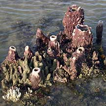
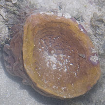
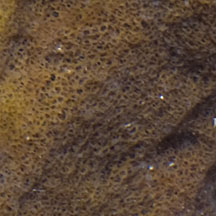
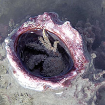
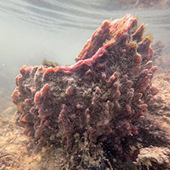

|
|
| sponges text index | photo index |
| Phylum Porifera |
| Barrel
sponge Xestospongia testudinaria* Family Petrosiidae updated Sep 2019 Where seen? This maroon barrel-shaped sponge is sometimes seen on many of our shores, near and in reefs. Features: Large ones have a deep cavity in the centre so they are generally vase- or barrel-shaped. The inside of the cavity has an uneven and rough texture. The outside may be smooth, bumpy or with regular fingers, ridges or 'wings'. Younger, smaller ones may be tall hollow tubes. Often several 'vases' of various sizes and shapes are found together emerging from what appears to be a common base. Those on the intertidal are about 10-20cm in diameter and about 10-20cm tall. But it is said that those found in deeper waters can grow to more than 1m tall. It is maroon to pinkish and the 'opening' of the barrel may be paler to white. The outside of the sponge is often covered with tiny beige Spionid sponge worms (Family Spionidae). Sometimes synaptid sea cucumbers are also seen draped on the outside. It it not correct to refer to this sponge as the Neptune's cup sponge (Cliona patera), which is usually found in deep water and often much larger. |
 Shapes range from fingers, tubes, branching roots to large vase shapes. Chek Jawa, Jan 02 |
 St. John's Island, Apr 12 |
 Inside the cavity, texture is uneven and rough. |
|
 Large animals find shelter inside the 'vase' Beting Bronok, Jun 03 |
*Species are difficult to positively identify without close examination.
On this website, they are grouped by external features for convenience of display.
| Barrel sponges on Singapore shores |
On wildsingapore
flickr
|
| Other sightings on Singapore shores |
 Terumbu Hantu, May 25 Photo shared by Tammy Lim on facebook. |
Links
References
|